Префектура Хёго · остров Авадзи · ретрит
«Дзэмбо Сэйнэй» на Авадзи: дзадзэн над лесом в здании Сигэру Бана
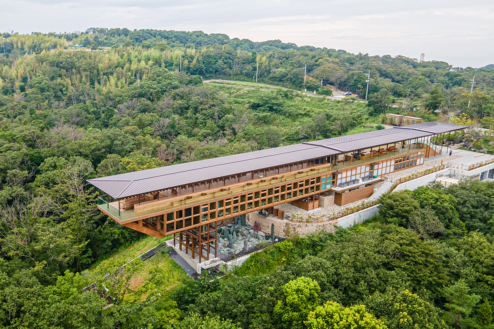
На севере острова Авадзи среди лесистых холмов стоит деревянное здание длиной около ста метров, похожее на мост, который никуда не ведёт. Это «Дзэмбо Сэйнэй», центр дзэн-медитации и ресторан, спроектированный лауреатом Притцкеровской премии Сигэру Баном.
Архитектура
Зал для медитации в воздухе
Авадзи лежит в Японском внутреннем море между Кобе и Сикоку, и его северная часть почти целиком состоит из невысоких лесистых гор. «Дзэмбо Сэйнэй» прячется в одной из долин, со всех сторон окружённой холмами. Место выбрано не только ради тишины: здание стоит прямо на 135-м меридиане восточной долготы, по которому в Японии отсчитывают время.
Сигэру Бан задумал его как «зал для дзадзэн в воздухе». Увидев участок на склоне, архитектор решил, что постройка должна словно парить над лесом и смотреть на него сверху. Снаружи она нарочно контрастирует с зеленью: длинная решётка из дерева, собранная как пролёт моста. Внутри же архитектура почти исчезает.
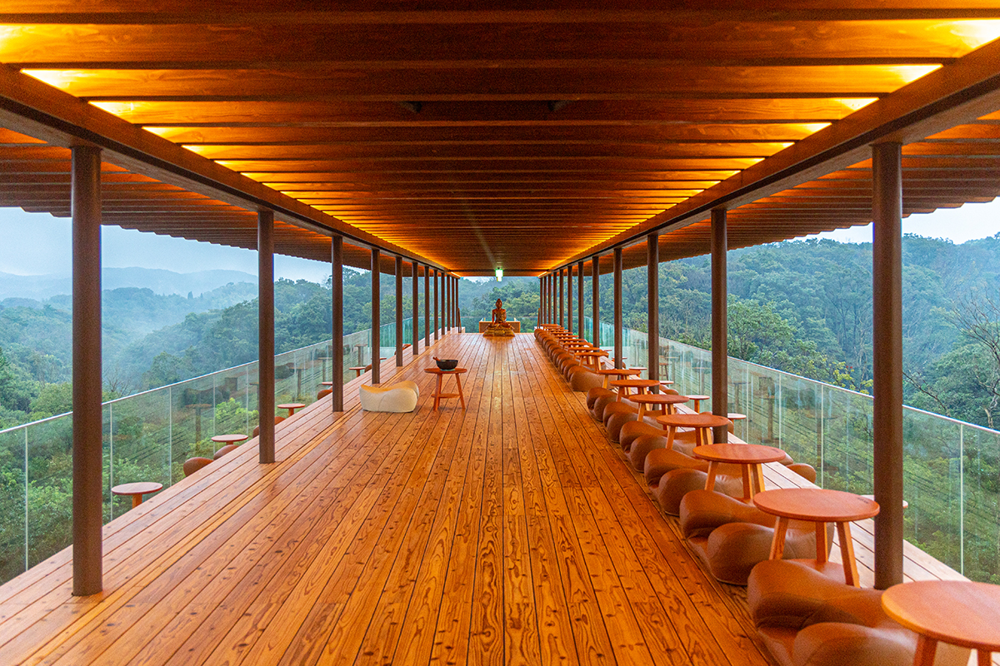
На втором этаже тянется открытая терраса длиной около ста метров. Стоит выйти на неё, и о здании забываешь: на все 360 градусов видны только кроны деревьев. Если закрыть глаза, шум леса слышен совсем рядом, ветер обдувает лицо, и кажется, будто висишь в воздухе.
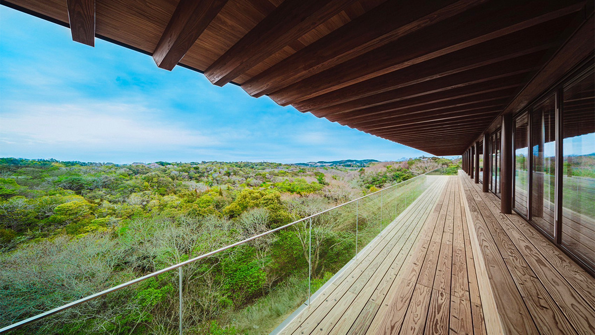
Ради этого ощущения в конструкции нет ни раскосов между колоннами, ни массивных балок. Пол по краю террасы опущен на ступень, поэтому сидящему человеку не видно даже перил.
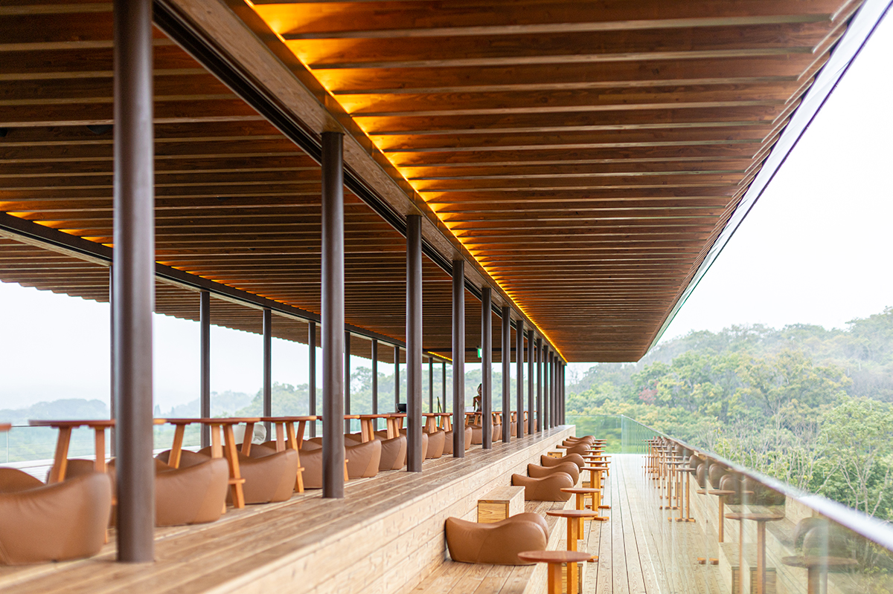
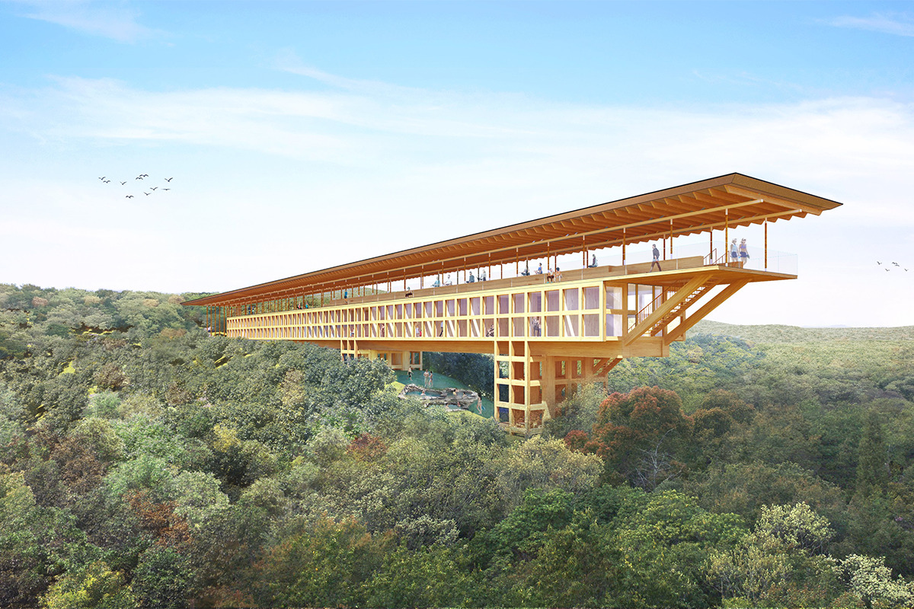
На первом этаже устроены 18 келий двух размеров. Каждая названа выражением из дзэн-буддийских текстов, а обстановка сведена к минимуму по старому принципу «сидя занимаешь половину татами, лёжа один татами». Убирать комнату перед отъездом гости будут сами.
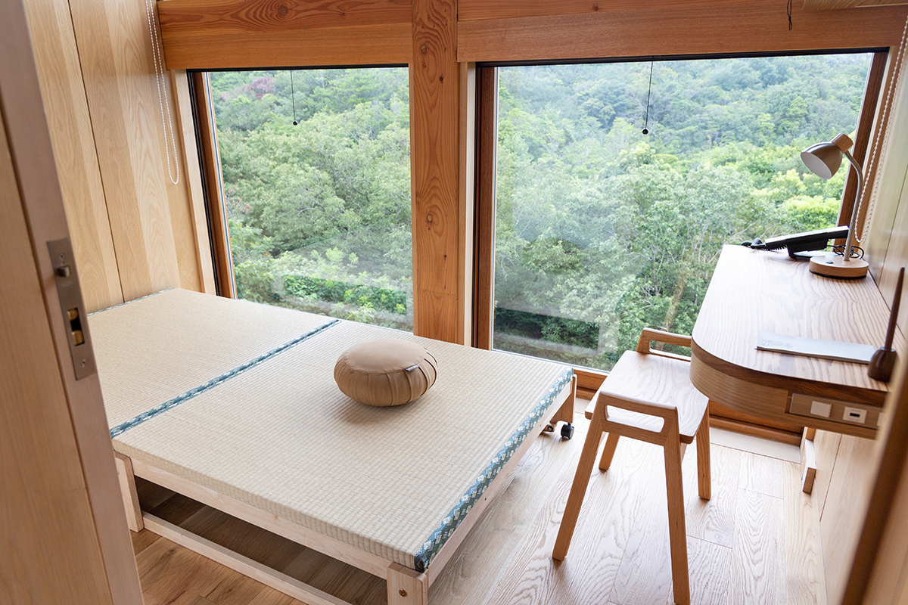
Вся территория занимает около 3000 квадратных метров. Кроме террасы здесь есть терраса для йоги, лаунж, салон, магазин и купальня под открытым небом. Логотип центра нарисовала каллиграф Сисю, известная работами на стыке каллиграфии, живописи и скульптуры.
Идея
Отдых для головы
«Дзэмбо Сэйнэй» открылся 29 апреля 2022 года. Им управляет кадровая корпорация «Пасона», которая с 2008 года занимается развитием Авадзи, а в 2020 году объявила, что переносит на остров часть функций своей штаб-квартиры.
«Мы стремимся к образу жизни, в котором человек здоров телом и душой и доволен своим местом в обществе. После пандемии люди стали иначе думать о том, как жить и работать, и забота о душевном здоровье стала не менее важна, чем о физическом. Здесь, в природе, можно по-настоящему перезагрузиться и провести время осознанно, как не получится в городе»
пресс-служба «Пасоны»
Основной формат это дневная программа примерно на четыре часа. Уже в первые месяцы после открытия сюда стали возвращаться постоянные гости, хотя Авадзи не самое близкое место для поездки на полдня.
Практика
Три дзэн-занятия
Главное, ради чего сюда едут, это программа «Дзэн-велнес» (ZEN Wellness), в которой соединены дзадзэн, медитация и йога. В дневной программе её проводят дважды, по 40–60 минут.
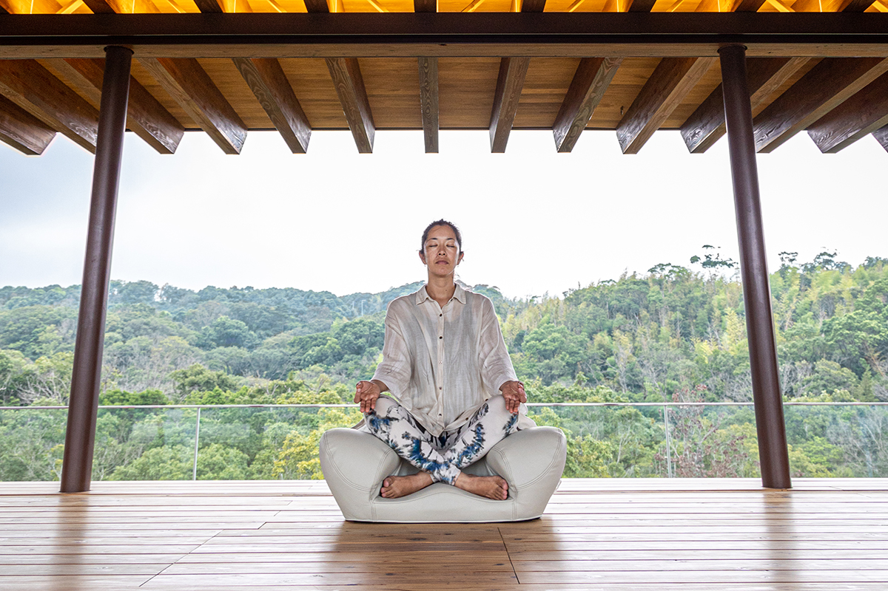
Начинается занятие со звона поющей чаши. Сначала гости немного разминаются, потом садятся в специальное кресло, и спина в нём выпрямляется сама. Инструктор говорит тихо и спокойно. С закрытыми глазами слышно, как шумят деревья, поют птицы и стрекочут насекомые, и пространство вокруг будто расширяется, а тело плывёт над лесом. Когда открываешь глаза, зелень кажется ослепительно яркой.
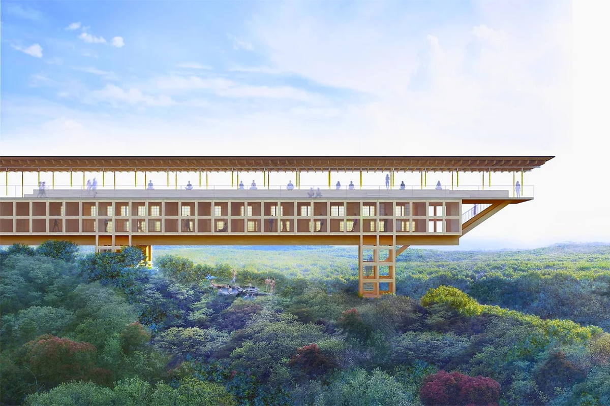
«Семь из десяти наших гостей пробуют дзадзэн впервые. Кто-то успокаивается и расслабляется так глубоко, что потом приезжает снова и снова»
инструктор
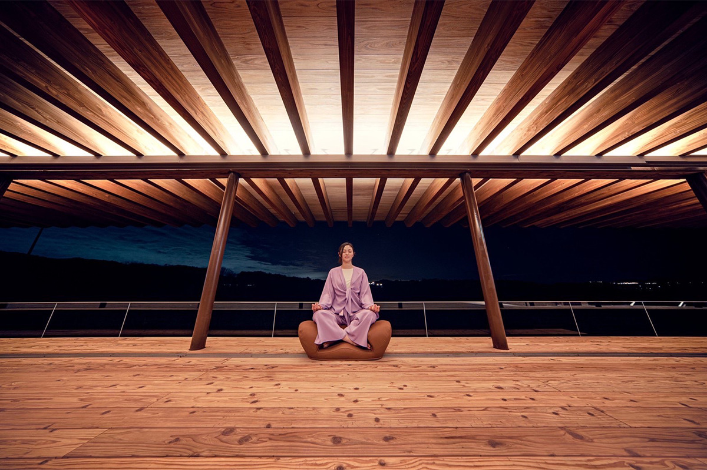
После медитации гостям предлагают ещё два занятия: каллиграфию и чай. Ни то, ни другое не требует подготовки, оба помогают сосредоточиться и успокоить мысли.
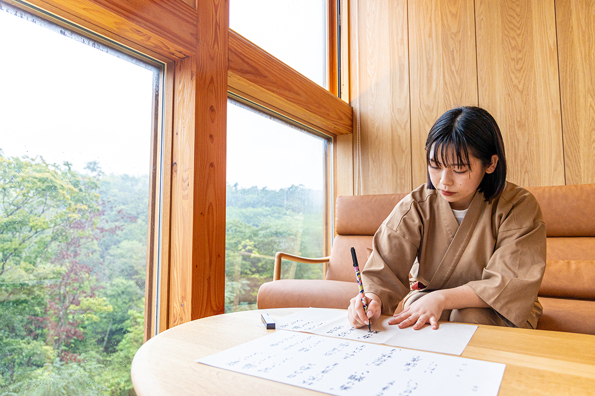
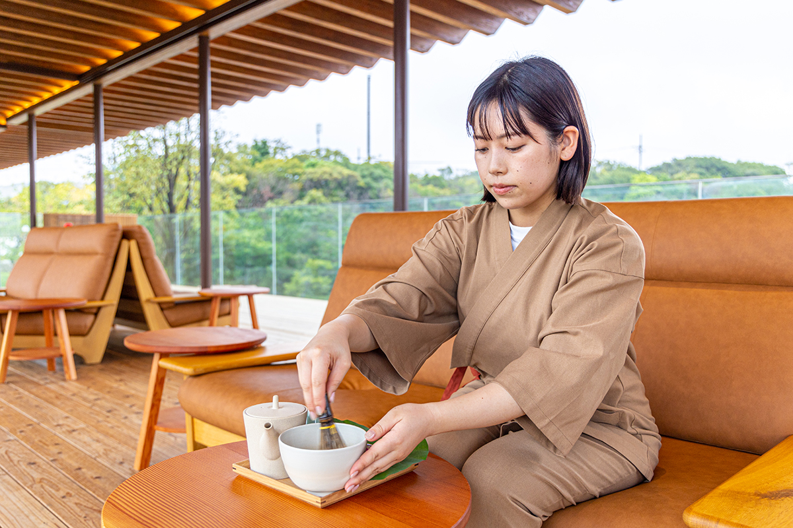
Кухня
Еда без сахара, масла и муки
Для хорошего самочувствия важна и еда, поэтому здесь готовят собственную «кухню дзэмбо». Меню придумал повар, который специализируется на ферментации. В нём нет мяса, рыбы, молочных продуктов и яиц, а кроме того, ни сахара, ни пшеничной муки, ни масла. Ограничения строже, чем в монастырской вегетарианской кухне сёдзин-рёри. Шеф, который готовит на месте, рассказал, что приправы здесь используют только традиционного производства.
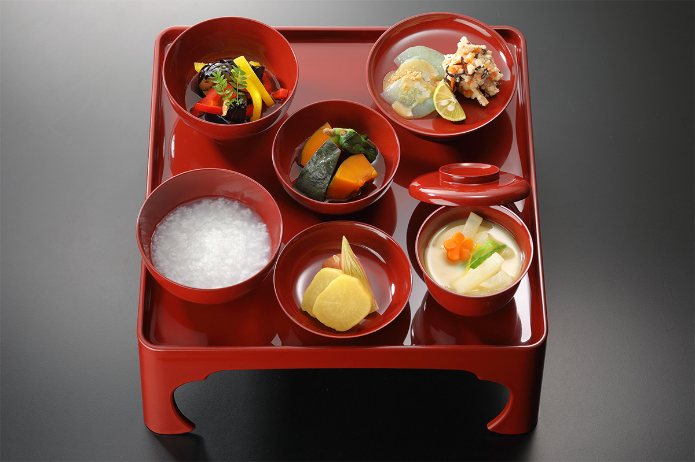
«Соевый соус, мирин и мисо, сделанные по старинке, не только вкуснее. Их готовят годами, поэтому организм легко их усваивает, и в них живая плесень кодзи»
шеф-повар
Главные продукты здесь овощи и рис с Авадзи. В древности остров был одной из «микэцукуни», земель, которые поставляли еду ко двору императора, и кухня центра показывает, чем он богат до сих пор. Обед заканчивается домашним амадзакэ, сладким рисовым напитком.
«Амадзакэ мы подаём в конце: живая кодзи помогает пищеварению»
шеф-повар
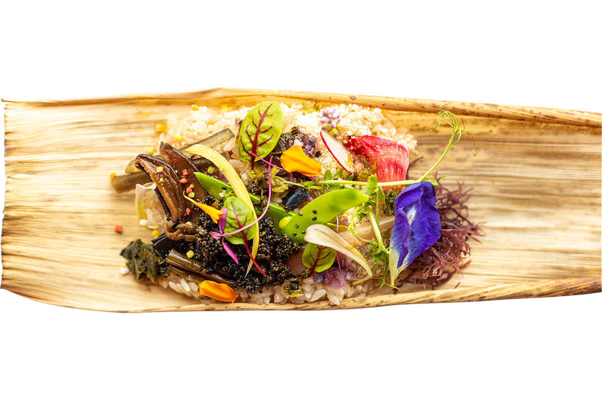
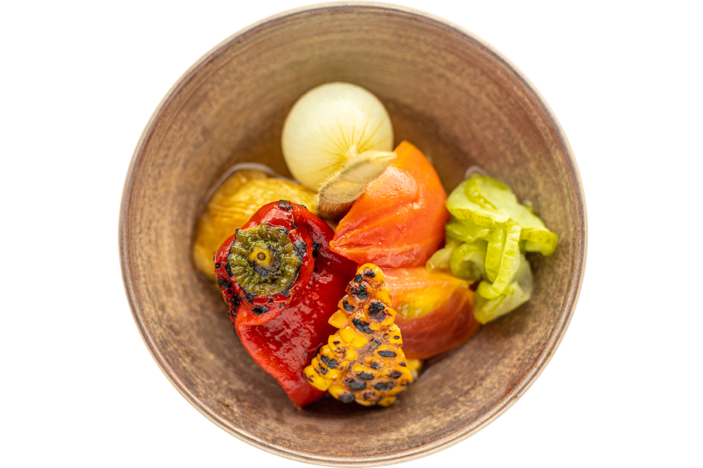
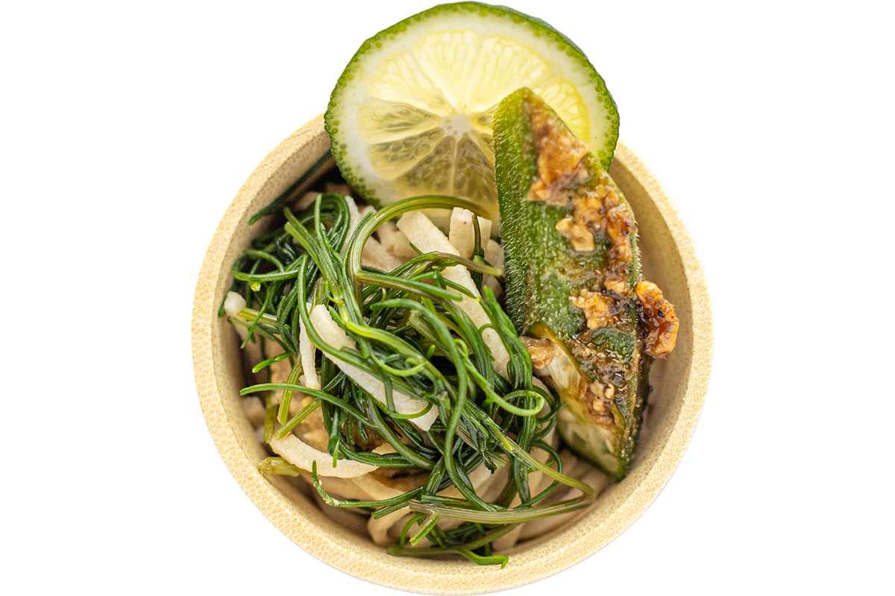
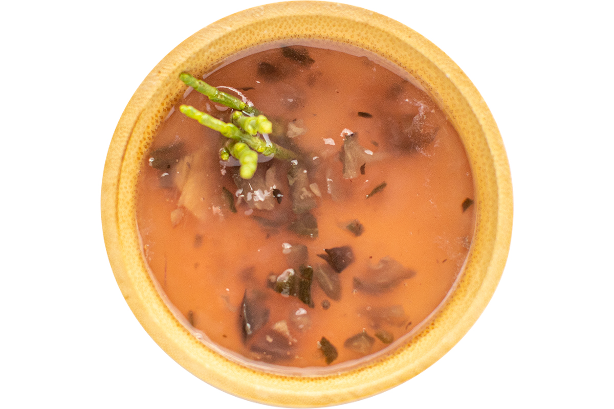
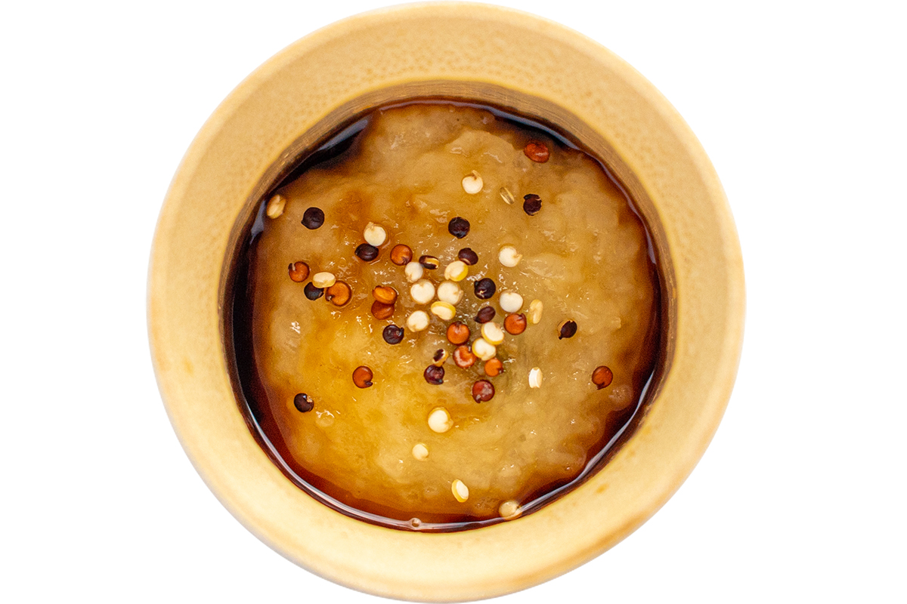
С ночёвкой
Ночь под луной
Тем, кто хочет глубже уйти в дзэн, предлагают программу с ночёвкой на два дня. Её проводят несколько раз в месяц, в основном в полнолуние и новолуние, а иногда и только для женщин.
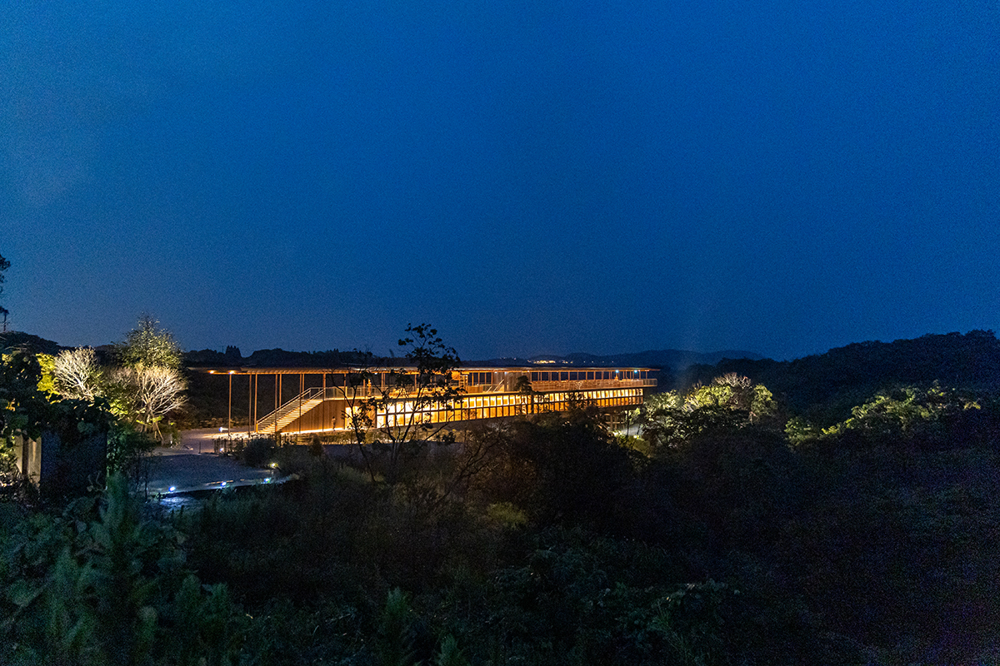
Распорядок такой (по программе он может меняться):
- 1-й день: заезд в 14:30, начало программы в 15:00, медитация с 15:30 до 16:30, чай или каллиграфия с 16:45, ужин с 18:00 до 19:00, вечерняя медитация с 19:30 до 20:00, отбой в 22:00.
- 2-й день: подъём в 6:30, утренний обряд с 6:45 до 7:15, медитация с 7:30 до 8:00, завтрак с 8:00 до 9:00, уборка комнаты с 9:30 до 10:00, выезд в 10:00.
В 2022 году дневная программа стоила от 23 000 иен, а ночёвка с ужином и завтраком от 48 000 иен.
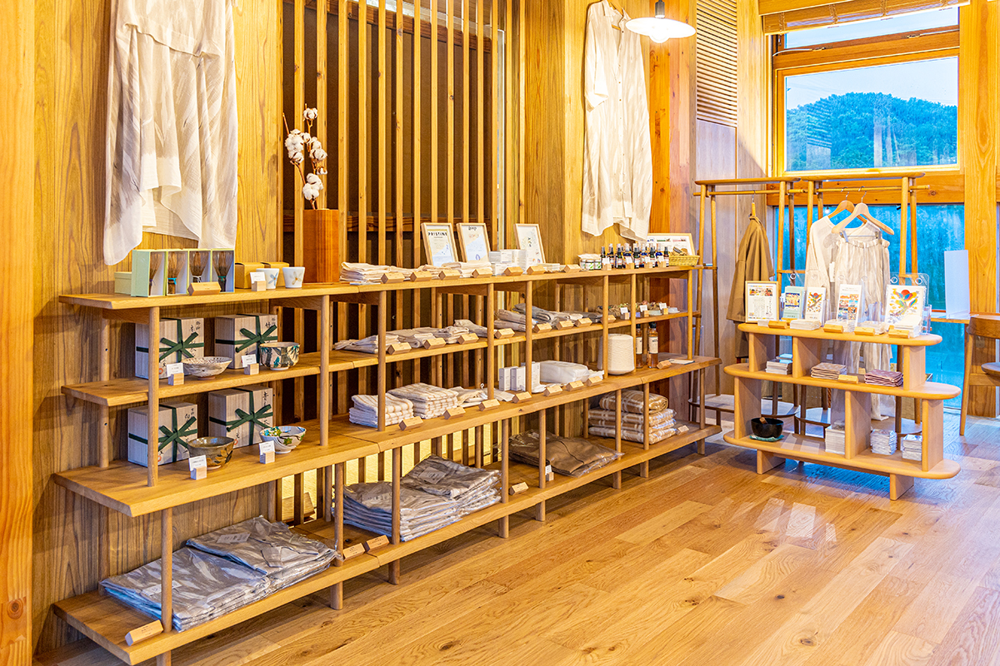
«Дзэмбо Сэйнэй»
- Адрес
- префектура Хёго, Авадзи, Кусумото, Банака, 2594-5
- Телефон
- +81 799-70-9087
- Номера
- 18 келий
- Заезд / выезд
- 14:30 / 10:00
- Цены / Вход
- дневная программа (4 часа) от 23 000 иен, ночёвка с ужином и завтраком от 48 000 иен
- Как добраться
- на машине около 5 минут от развязки Авадзи скоростной дороги Кобе-Авадзи-Наруто; на автобусе от автовокзала Санномия в Кобе около 45 минут до остановки «Дзэмбо Сэйнэй-маэ»; или пешком 10 минут от станции JR Акаси до порта, паромом «Дзэнова-лайн» 13 минут до порта Ивая, оттуда бесплатный шаттл
Фото: Синтаро Мияваки.